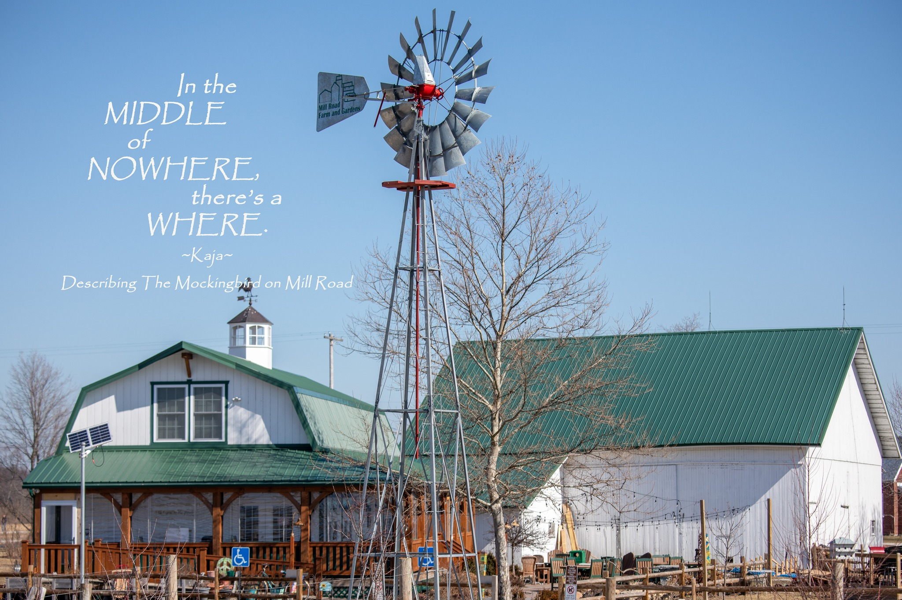
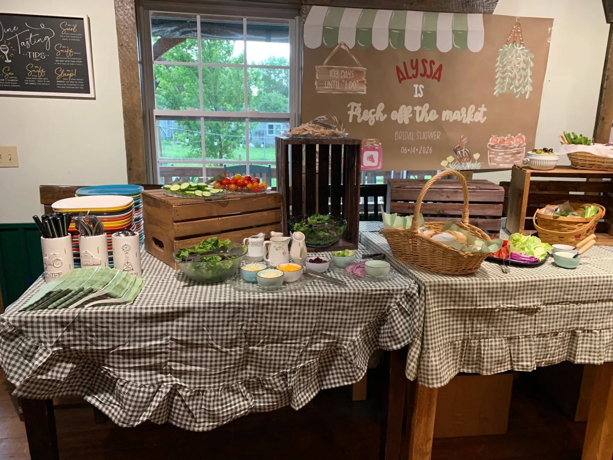

Night Singer Sessions
Ticketed, candlelit and limited to 32 seats. Our listening-room series is built for leaning in: phones away, songs first.

A wine and music house in the country
Twenty wines by the glass. Music to make a night of. A country farmhouse in Graytown where your next favorite is waiting.
Wine + music in the country
Pick a date. Gather your favorite people. Head for the farmhouse.
The Mockingbird is a wine and music house in Graytown, Ohio. Come for a wine you haven’t met, a song you love, and time together that doesn’t need rushing. Bring your curiosity. We’ll help with the wine.
A patio, a studio side and a tasting room give you a few ways to settle in.
Wine, flights + the bottle shop
Our 20 wines by the glass are listed sweet to dry. Start where you’re comfortable, then see what catches your eye.
Build your own flight: any 4 wines or tap pours for $15. Mix familiar favorites with something new.
Our taps include Peach Mango and Cucumber Lime sangria. Explore hazy IPAs, porters and a barrel-aged rye ale, with familiar beer favorites, too.
Our bottle shop has wines you won’t find at the grocery store. Tell us what you enjoy or what you’re bringing it to. We’ll help you choose.
Music + events
Some nights invite a singalong. Some ask you to lean in and listen.
Ticketed, candlelit and limited to 32 seats. Our listening-room series is built for leaning in: phones away, songs first.
Themed shows give you a reason to choose a date and gather your people.
Live band karaoke. Take your turn at the microphone with a band behind you.
Dueling pianos, twice a year. Put these nights on your calendar.
Thursdays bring trivia and book club. Quarterly wine dinners give you another evening to look forward to. Check the calendar for dates and details.
From our kitchen
Scratch-made food, built for sharing with wine.
Make room on the table for cheese and charcuterie boards, homemade flatbreads, pressed sandwiches and soup. Tom’s homemade crackers, house jam and a weekly sweet bring a little more of the house to your evening.
Gift cards
Give someone wine, music and a farmhouse evening to look forward to.
Give a Gift CardPrivate parties

Showers, birthdays and reunions feel at home here.
Bring everyone together in a country farmhouse setting, with homemade food and flexible drink options. Tell us what you’re celebrating. We’ll help shape the gathering around your group.
Plan a Private PartyComing early 2027
The Mockingbird Wine Club launches in early 2027.
Founding memberships will open soon. Leave your name and email to hear when they’re ready.
Plan your visit
Make Graytown your next night out.
Coming from Toledo, Oak Harbor, Port Clinton or somewhere nearby? Choose a night from the calendar and come spend it in the country.
4408 N. Elliston-Trowbridge Road
Graytown, Ohio 43432
Hours